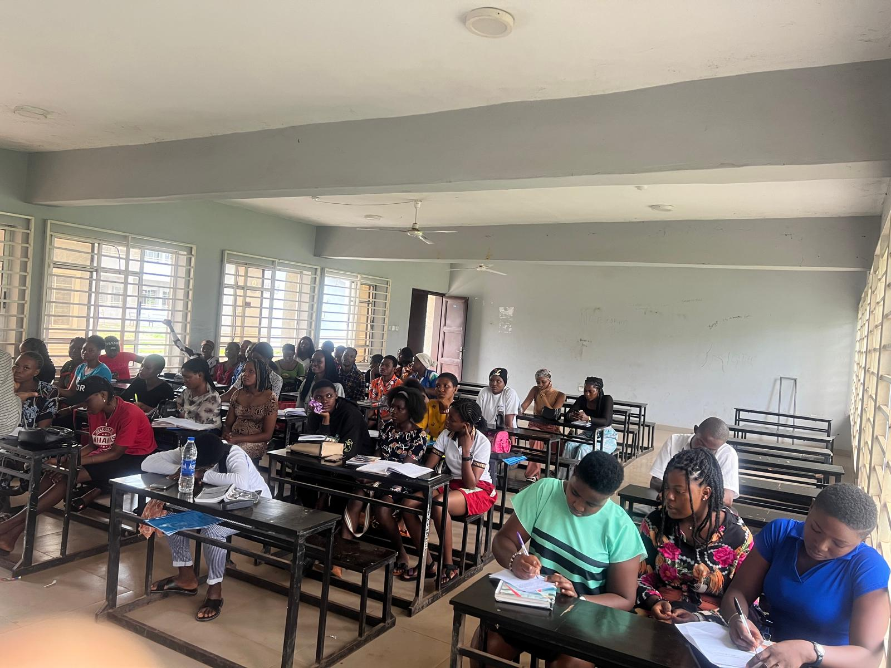
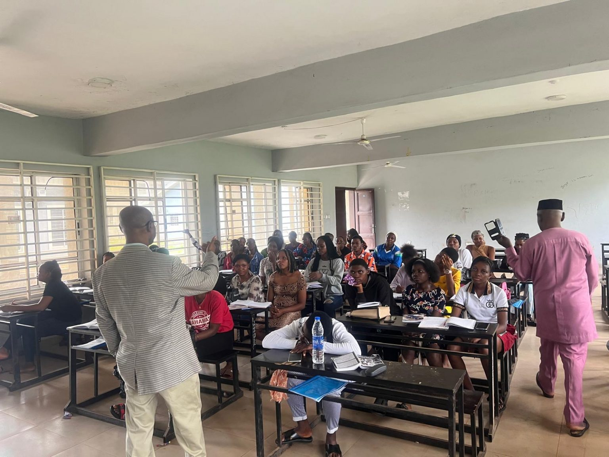
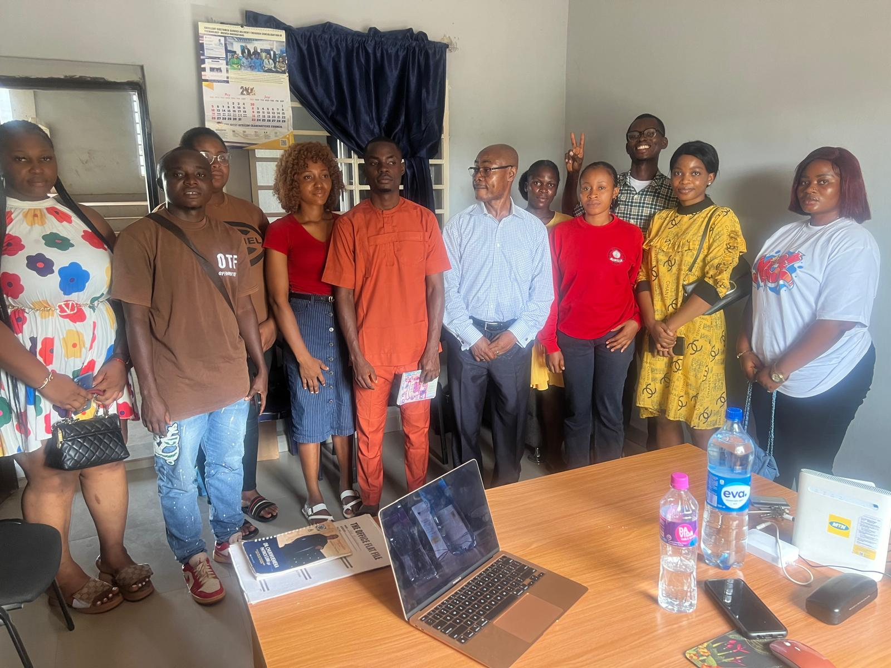
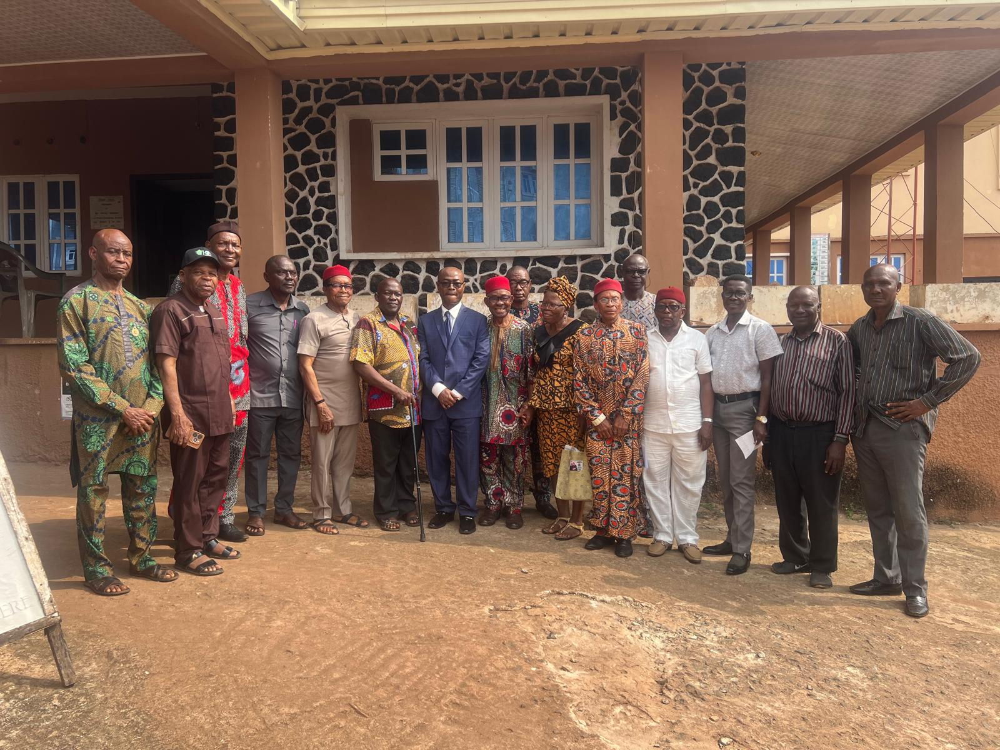

Better information makes stronger communities.
Building media literacy and independent journalism so African communities can separate fact from noise.
Truth needs infrastructure.

From classrooms to newsrooms, we build the skills, relationships, and public policies that help reliable information travel further.
Our storyThree places where better information changes lives.
We work across the information chain, helping people learn, helping journalism thrive, and helping evidence reach public decisions.
Our work, in practice
Practical work for stronger communities.
Our programs turn those focus areas into practical work with communities and partners.
Start with learning
Workshops that make media literacy practical, shared, and useful.

Strengthen the storytellers
Support for ethical reporting and the next generation of local journalists.

Carry it into public life
Research and advocacy that connect community knowledge to public action.
People, partnerships, and practical learning are at the center of our work.
Change happens in the room.
Our work is grounded in workshops, conversations, and collaborations that make media education tangible. We work alongside journalists, educators, students, and communities across Africa.
Read the latest storiesGet involved
Partner with MEDIA as a volunteer, educator, journalist, funder, or advocate.